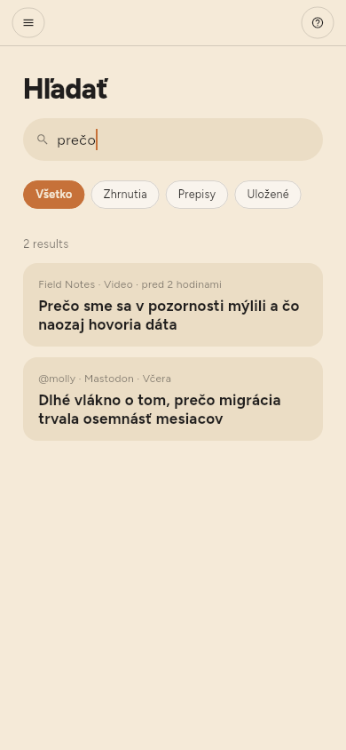
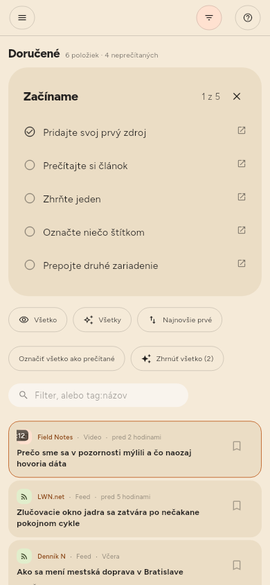

← Zhrnutia · Obsah · Uchovávanie →
Hľadanie
Hľadať na polici, alebo /.
Hľadanie prechádza názvy, text článkov a prepisy videí. Zhoda v prepise je miesto — uvádza čas a pri otvorení naň preskočí. Položku bez názvu nájdete podľa jej adresy.

Textové pole v paneli filtrov je niečo iné: zužuje zoznam pred vami, namiesto toho, aby otváralo vlastné výsledky. Hľadá v názve, v mene zdroja a v zhrnutí — Hľadať číta aj text článkov a prepisy.

Každý filter sa pýta celej knižnice, nie iba časti na obrazovke. Slovo, štítok, Neprečítané, Nezhrnuté, kanál, druh: na každé odpovedá úložisko, takže číslo nad zoznamom je skutočný počet vecí. tag:linux nájde všetko s týmto štítkom, nech je to akokoľvek staré; dva štítky zužujú, nerozširujú, a hodnota s medzerou patrí do úvodzoviek: tag:"machine learning".
Štítky (len Premium)
Štítky článku sú témy, ktoré vybralo jeho zhrnutie, a môžete ich meniť: čipy pod názvom v čítačke štítky pridávajú a odoberajú a kliknutie na čip ukáže všetko, čo ho nesie.
Štítok môže mať aj zdroj, v jeho paneli — a článok sa filtruje podľa štítkov svojho zdroja aj podľa vlastných, takže štítok na kanáli usporiada aj stovku článkov, ktoré v ňom už sú, nielen tie, ktoré prídu.
Každý používaný štítok je na polici v časti Štítky spolu s tým, čo obsahuje. Kliknutie naň zúži zoznam a štítok zostane, kým nekliknete na iný alebo ho neodoberiete krížikom × na jeho čipe nad zoznamom.